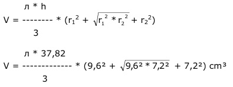

Aufgabe 259 Wie groß ist das Volumen eines geraden Kegelstumpfes, wenn der kleinere Radius 7,2 cm, der größere 9,6 cm und sein Mantel 20 dm² betragen? 20 dm² = 2 000 cm² M = л * s * (9,6 cm + 7,2 cm) M = л * s * 16,8 cm | :л * 16,8 cm M 2 000 cm² s = -------------- = -------------- = 37,9 cm л * 16,8 cm л * 16,8 cm Satz von Pythagoras: s² = h² + (9,6 cm - 7,2 cm)² 37,9² = h² + 5,76 cm² |- 5,76 h² = 1 436,4 - 5,76 cm² h² = 1 450,64 |√ h = 37,82 cm  л * 37,82 V = ----------- * (92,16 + 9,6 * 7,2 + 51,84) cm³ 3 л * 37,82 V = ------------ * 213,12 cm³ = 8 436 cm³ 3